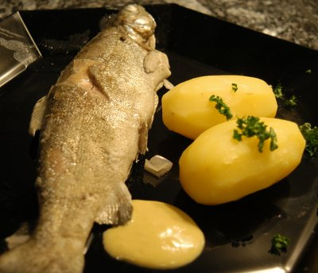

| Zutaten für 4 Personen: | |
| 4 | Forellen (à 250 g) |
| Salz | |
| 1 | Zitrone |
| 6 | Pfefferkörner |
| 5 | Perlzwiebeln |
| 1 dl | Weisswein trocken |
| 1 Bund | Estragon oder 5 EL geriebener Estragon |
| 20 g | Butter |
| 3 | Eigelb |
| Cayennepfeffer | |
| Estragonessig | |
| 2 l | Wasser |
2 l Wasser mit Zitronensaft, Pfefferkörnern, Weisswein, geschälten und gevierteilten Perlzwiebeln, 3 EL Estragonessig und 1/2 Bund Estragon aufkochen, salzen und 10 Minuten sieden lassen.
Die ausgenommenen Forellen innen und aussen sorgfältig unter fliessendem Wasser waschen, ohne ihre schleimige Haut zu verletzen.
Die Fische in den Sud legen und bei schwacher Hitze 10 - 12 Minuten leicht ziehen, aber nicht sprudeln lassen.
Eigelbe verklopfen.
Butter zerlassen
Dem Sud 8 EL entnehmen und mit dem restlichen fein gehackten Estragon in eine kleine Schüssel geben. Diese in das Wasserbad stellen, die verklopften Eigelbe nach und nach beigeben und zu einer cremigen Masse verrühren.
Die Schüssel aus dem Wasserbad nehmen und die zerlassene Butter tropfenweise darunter schlagen.
Mit Salz, Cayennepfeffer und etwas Estragonessig abschmecken.
Forellen aus dem Sud nehmen, kurz abtropfen lassen und auf den Tellern anrichten. Mit der Sauce übergiessen oder diese getrennt dazu servieren.
Herbert Eigenmann, Code: XFB
Schmeckt ganz ordentlich. Das Problem mit Forellen ist natürlich, dass sie nicht wirklich in die Töpfe passen und dann so gebogen daher kommen. Ausserdem haben Forellen kleine Gräten und müssen daher sorgfältig gegessen werden. Auch gibt es Leute denen der ganze Fisch etwas zu sehr nach "Tier" im Teller aussieht. Mir schmeckt das Rezept aber. RE, 5.6.2005
Hat wiederum fein geschmeckt. Die Sauce kommt sehr gut. Aber wie das mit den Saucen so ist: es gibt immer viel zu wenig davon. RE 16.1.2010
@LINKBACK_TAG@ @WAKELOCK@